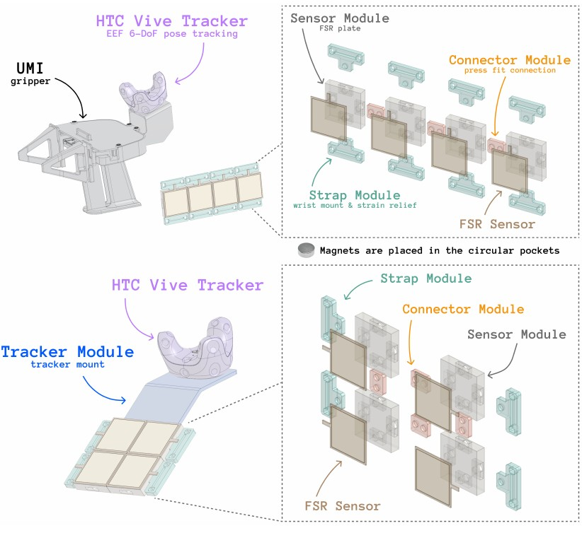
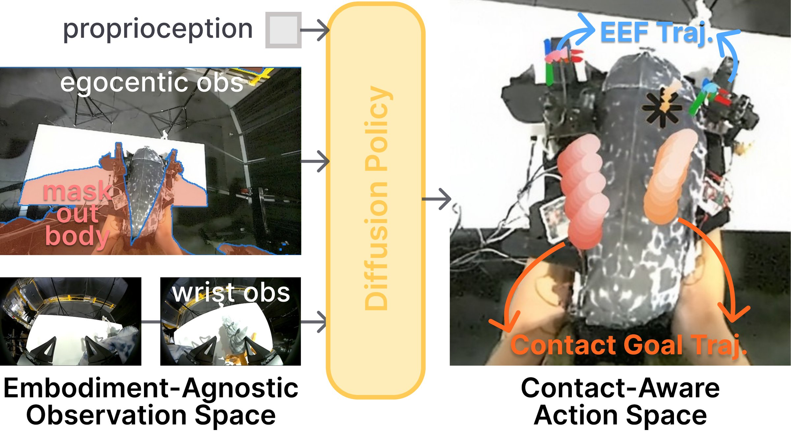
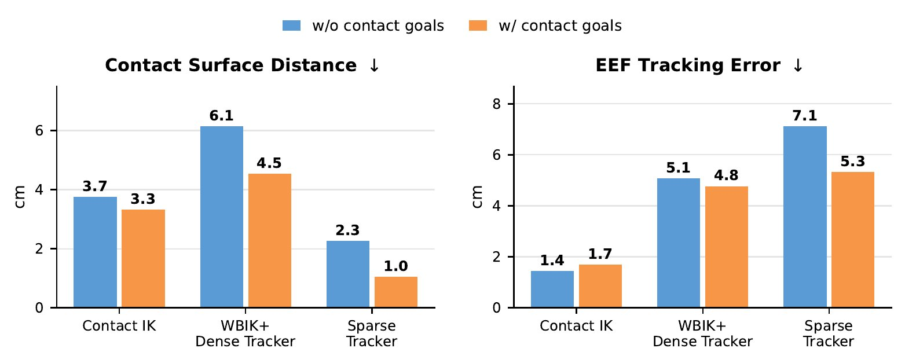
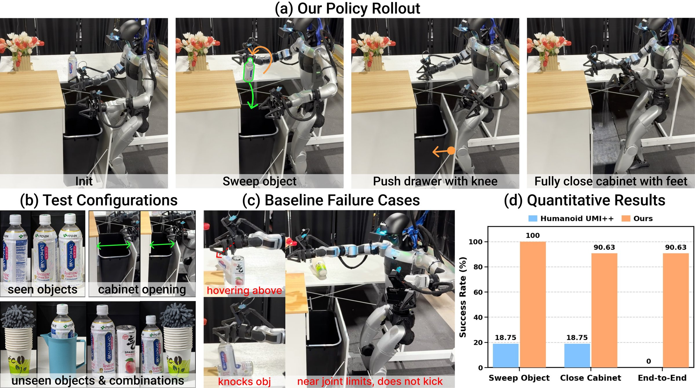
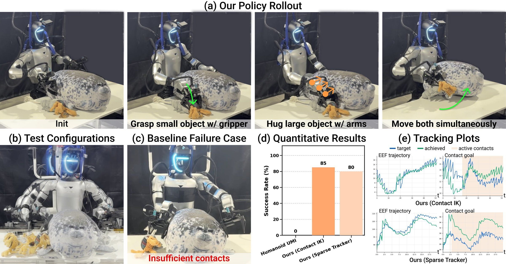
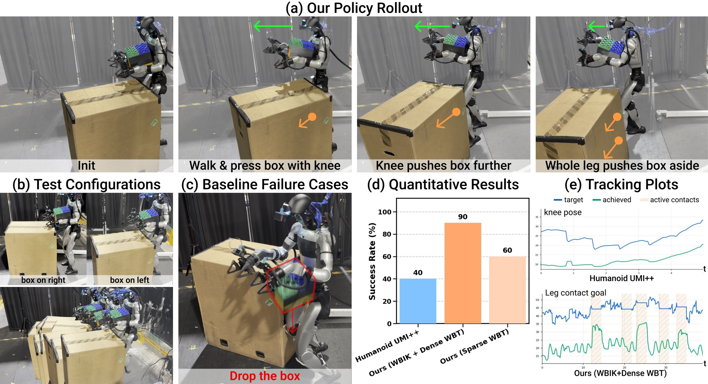

Teaching Whole-Body Dexterity with a Wearable Contact Interface
Humanoid robots have many degrees of freedom and contact surfaces, yet most loco-manipulation research restricts manipulation to the hands and avoids other body contacts with the environment. To extend manipulation beyond the hands, we present PanTact, a system that enables humanoid whole-body dexterity, the capability to manipulate with any suitable body surface, and learned directly from robot-free human demonstrations. Our key idea is that contact is manipulation-centric information that should be tracked and transferred across embodiments. Specifically, PanTact captures, learns, and executes whole-body contact via: 1) a wearable, robot-free data collection interface that augments egocentric vision and bimanual UMI grippers with whole-body modular contact patches to record body contact location and intensity; 2) a visuomotor policy that mitigates the egocentric observation gap and predicts whole-body contact goals; and 3) contact-aware whole-body control formulations that realize active contact goals using suitable robot surfaces under robot-specific constraints. Deployed on a Unitree G1 humanoid without additional body contact sensors, PanTact demonstrates coordinated prehensile and non-prehensile whole-body manipulation involving body support, pushing, sweeping, and load-sharing.
Egocentric-augmented bimanual UMI grippers plus modular contact patches on the forearms and knees record where, when, and how hard the demonstrator's body contacts the environment.
Robot-free demonstration. Head and wrist camera views recorded alongside live readings from the forearm and knee contact patches, captured in sync while the demonstrator performs the task.

A diffusion policy maps embodiment-agnostic observations to EEF trajectories and whole-body contact goals.

The controller realizes active contact goals with any suitable robot surface, rather than assigning each contact to a fixed link.
Differential IK QP jointly optimizing EEF and contact tasks. Precise and interpretable, requires no training data or simulation; limited to upper-body tasks.
Contact-aware whole-body IK with foot and balance constraints, executed by a learned dense motion tracker. Lets contacts be reached by the lower body and adds locomotion.
RL goal-conditioned controller that directly tracks sparse EEF and contact goals, trained in simulation with hindsight contact labeling.

The robot sweeps tall objects from a counter into an open bin in a single stroke, then uses a lower-body surface to push the cabinet closed. Ours (WBIK + Dense Tracker) reaches 90.63% end-to-end success; Humanoid UMI++ 0%.
Ours · WBIK + Dense TrackerThird-person view (left) and synchronized robot egocentric view (right)
Seen object, different layout
Unseen object
Two seen objects
Two unseen objects
One object
Two objects

An upper-body analogue of the hand's ulnar grasp: the robot grasps a small object with the gripper, then embraces a bulky object with its arms and moves both simultaneously. Ours (Contact IK) reaches 85% success; Humanoid UMI 0%.
Ours · Contact-Aware IKRollout 1
Rollout 2

The robot carries a box in both arms, walks towards a larger box on the floor, and pushes it with its shins and knees. Ours (WBIK + Dense Tracker) reaches 90% success; Humanoid UMI++ 40%.
Ours · WBIK + Dense TrackerRollout 1
Rollout 2 · box on right
